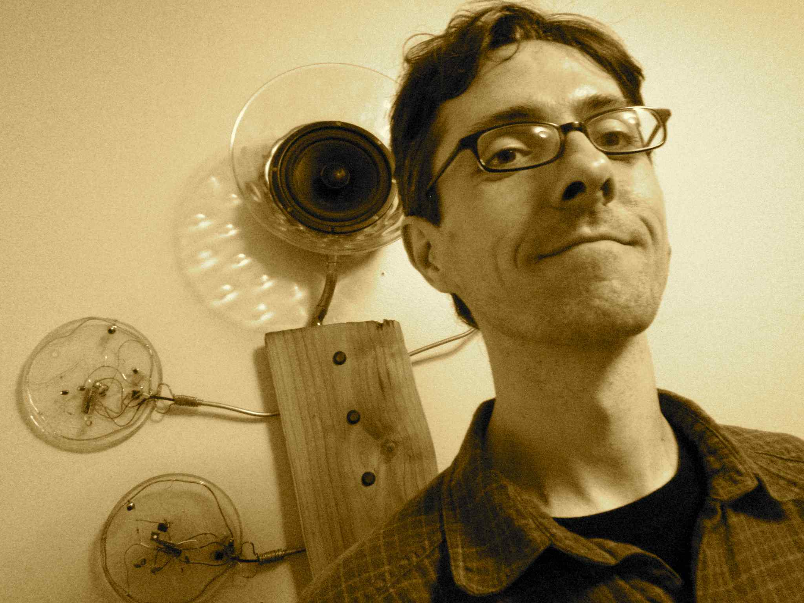

Computational Methods for Paleogenomics and Comparative Genomics
Computational Methods for Paleogenomics and Comparative Genomics

|  | Cedric Chauve
Professor, Department of Mathematics, SFU. Email: cedric.chauve [at] sfu.ca. |
Current members
MSc student, Department of Mathematics, SFU (co-supervised with Caroline Colijn).
Aniket Mane.
PhD student, Department of Mathematics, SFU.
PhD student, Computer Science, SFU (co-supervised with Faraz Hach).
PhD student, Computer Science, UBC (co-supervised with Faraz Hach).
Alumni.
Post-Doctoral Fellow, SFU, (co-supervised with Leonid Chindelevitch).
Currently at Imagia Canexia Health.
Post-Doctoral Fellow, BC Cancer Agency, (co-supervised with Sara Mostafavi and Ryan Brinkman).
PIMS-CNRS Postdoctoral fellow, PIMS (co-supervised with Marni Mishna and Yann Ponty).
Currently Assistant Professor in Caen University.
Postdoctoral fellow, SFU.
Currently Canada Research Chair at University of Sherbrooke.
PhD student, Computer Science at SFU (co-supervised with Ryan Brinkman).
Currently at Metafora Biosystems.
PhD student, Computer Science, SFU (co-supervised with Cenk Sahinalp and Faraz Hach).
Currently at Boreal Genomics.
PhD student, Department of Mathematics, SFU.
Currently at Accenture.
Visiting PhD student, Mathematics at SFU and Bioinformatics at Bielefeld University.
Visiting PhD student, Mathematics at SFU and Bioinformatics at Bielefeld University.
Visiting PhD student, Mathematics at SFU and Bioinformatics at Bielefeld University.
Visiting PhD student, Bielefeld University (co-supervised in Vancouver with Ryan Brinkman).
Visiting PhD student, University of Montpellier.
Currently Post-Doctoral fellow in CoBius, Unversity of Sherbrooke.
PhD student, Bielefeld University (co-supervised with Jens Stoye and Roland Wittler).
Currently Mainz University.
Visiting PhD student, University of Campinas.
Visiting PhD student, University of Bielefeld (January-April 2014).
Currently Post-Doctoral Fellow at Institute f. Med. Biometry and Bioinformatics, University Hospital Düsseldorf.
MSc student, Computer Science at SFU (co-supervised with Leonid Chindelevitch).
Currently at Amazon.
MSc student, Computer Science at SFU (co-supervised with Leonid Chindelevitch).
Currently at AmGen.
MSc student, Department of Mathematics, SFU (co-supervised with Jan Manuch and Ladislav Stacho).
Currently PhD student in Computer Science at SFU.
< href="https://www.linkedin.com/in/france-paquet-nadeau-7419a2139/">France Paquet-Nadeau.
MSc student, Department of Mathematics, SFU (co-supervised with Marni Mishna).
Currently at UbiSoft.
Bradley Jones
MSc student, Department of Mathematics, SFU (co-supervised with Karen Yeats).
Currently PhD student at the BC Centre for Excellence in HIV/AIDS.
Visiting MSc intern, ENS Cachan, co-supervised with Leonid Chindelevitch.
Currently PhD students at Paris-Saclay.
a href="https://htyao.gitlab.io/">Hua-Ting Yao.
Visiting MSc intern, Ecole Polytechnique, co-supervised with Leonid Chindelevitch.
Currently Post-Doctoral Fellow at University of Vienna.
Hugo Menet
Visiting MSc intern, ENS Lyon.
Most recently PhD student at University of Lyon.
Honours BSc and NSERC USRA, SFU, Mathematics.
Currently Junior accountant.
Sean La
Undergraduate intern, NSERC USRA, SFU.
Currently graduate student at UBC.
MITACS Globalink intern.
Koen van Greevenbroek
BSc intern, Department of Mathematics, SFU.
Beryl Zhuang
MSc intern, Bioinformatics Training Program for Health Research (co-supervised with Will Hsiao).
Jake Turner
Undergraduate intern (NSERC USRA, summer 2014), Department of Mathematics, SFU (co-supervised with Tamon Stephen).
Other Alumni: follow this link.